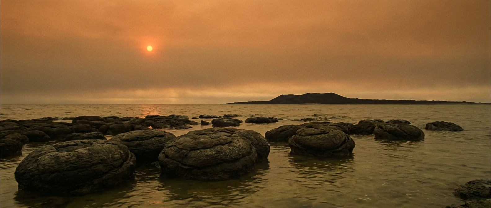
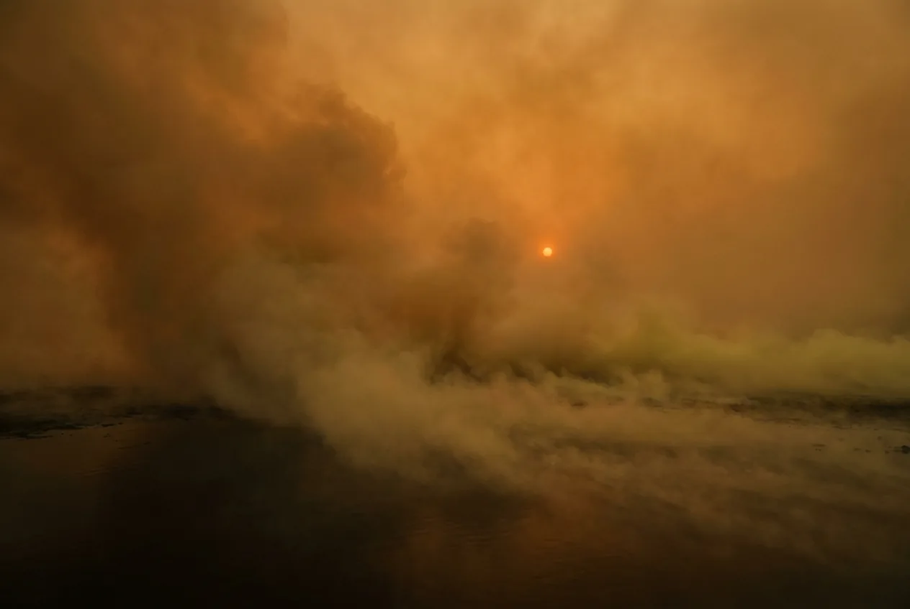
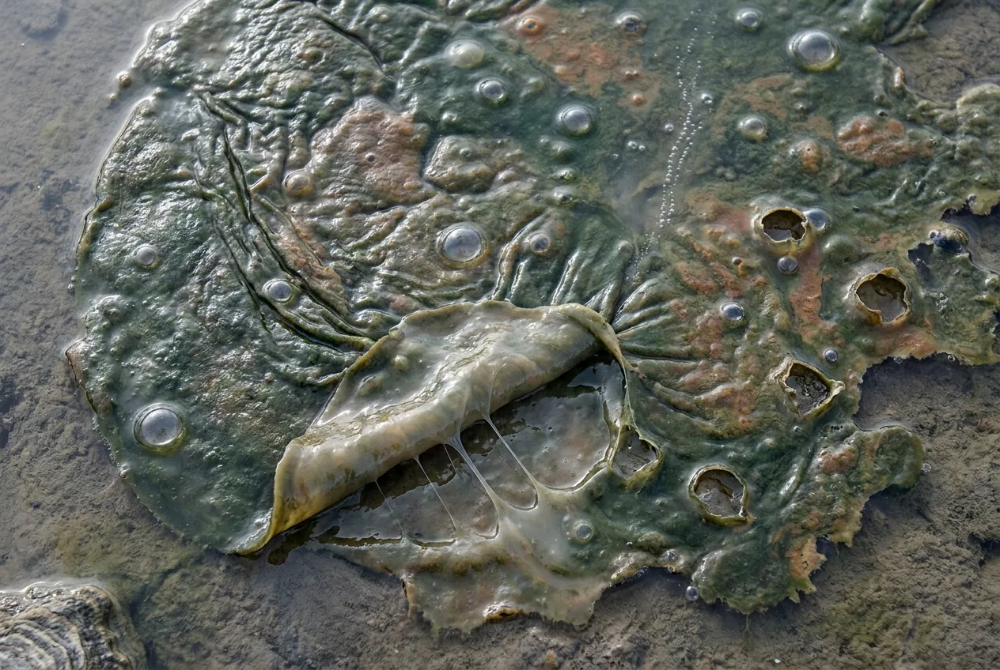

A third of Earth's entire existence, and every day of it would kill you. Life is here, thriving, single-celled and busily doing chemistry that does not involve oxygen. The sky is orange with photochemical haze. The ocean is green.
No hotter than a bad summer, no crushing pressure, nothing hunting you, and it still ends within two minutes. This is the era that makes the point: habitability is almost entirely about the gas mix.

Scale 0–40%. Cyanobacteria are producing oxygen by the late Archean, but every molecule is consumed immediately by dissolved iron and volcanic gases.
Scale 0–1,500 ppm; today ~1.9 ppm. Methanogens dominate the biosphere. Their waste gas is the greenhouse holding the planet above freezing.
The Sun is a fifth dimmer. By straightforward physics Earth should be frozen solid, and it is not. That contradiction is the faint young Sun paradox, and methane is most of the answer.
Scale −20 to 250 °C. Some oxygen-isotope readings suggest oceans at 55–85 °C. Those are now widely challenged on the grounds that seawater chemistry, not temperature, drove the signal.
Scale 0–24 h. Roughly 515 days in a year. Extrapolated backwards from the 18.7-hour figure measured at 1.4 Ga.
Scale 0–40%; today ~29%. Continental crust is forming but most of it sits below sea level. This is a water world with volcanic islands.

Warm, wet, no fire, no impacts overhead, ordinary gravity. A beach under a strange orange sky. Nothing about the scene warns you, which is exactly why the Archean is the more unsettling of the two dead eras.
Same mechanism as the Hadean: with none in the air, the gradient runs outward and each breath costs you. The CO₂ load is lower here, so the panic is less violent and the loss of consciousness is quieter.
Slightly longer than the Hadean because you are not also fighting heat and pressure. Longer, not survivable.
You die on a planet that is fully alive. Every shallow sea is coated in bacterial mats, and not one of them is making a gas you can use.
Only with bottled air. With it, this is the first era you could actually work in.

None. The one blocking problem, and it stays blocking for another 1.5 billion years.
A global ocean, warm and mildly acidic. Fresh water exists on the volcanic islands.
Bacterial mats. Technically organic matter, nutritionally close to eating pond scum, and it is all there is.
Impossible without oxygen, in an atmosphere loaded with methane. Bringing an ignition source would be an interesting way to test that.
Basalt and volcanic glass. Obsidian here is as good as anywhere, if you have a reason to knap it.
Mild, humid, and hammered by tides several times a day from a Moon much closer than yours.